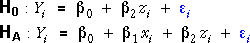

Tests for the slope parameters
In earlier sections of this chapter we have described two different types of test for whether the slope parameters associated with X and Z are zero — t-tests for the individual parameters and a combined F-test for them both.
It is important to understand the difference between these two types of test.
T-tests
These are separate tests for the two slope parameters, each of which asks whether one slope parameter is zero. These tests both refer to the full model,

For example, the t-test for the slope parameter associated with X is comparing the hypotheses:

These hypotheses equivalently compare the two models:

Each t-test therefore asks about dropping a single variable from the full model but:
The two t-tests do not give information about whether both variables might be dropped.
F-test
On the other hand, the F-test simultaneously asks whether both parameters are zero:

This is equivalent to comparison of the two models:
The F-test therefore assesses whether both variables can be dropped together, but:
The F-test gives no information about whether dropping a single variable (but not the other) is reasonable.
For multicollinear data
When the two explanatory variables are highly correlated, it is relatively hard to disentangle their effect on the response. It may be found that:
In terms of the tests that were described above, this corresponds to:
This may seem like a paradox but can be understood if you think carefully about the hypotheses that the tests are testing.
Heart catheter length
The diagram below shows the results of F- and t-tests applied to the heart catheterisation data that were described on the previous page.
The conclusion from the F-test is that there is strong evidence that at least one of height and weight is related to the catheter length.
However from the t-tests, we conclude that either height or weight can be dropped from the full model (leaving the other variable). Only one explanatory variable seems to be needed in the model, but there is little evidence about which is the more important of the two.
The surgeon does not need to use both height and weight to predict the required catheter length, but there is little evidence about which of the two variables will give the more accurate predictions.
Leafing-out time
In a study of genetic variation in sugar maple, the time of leafing-out of nursery seedlings in Wooster, Ohio, was measured in units of a weighted mean index in April, 1955. The seeds had been selected from native trees in the Eastern United States and Canada. Their time to leafing-out (Y = mean index) has been related to latitude north (X = °North) and the mean July temperature at the place of origin (Z = °F).
We wish to examine the relationship between Y and the explanatory variables X and Z since any connection would show that the place of origin had an effect on leafing-out time. Since this effect could only be transmitted genetically via the seeds, it would imply a genetic difference between plants in the different areas. (Click on crosses to see the source of each batch of seeds.)
The F-test gives strong evidence that at least one of the explanatory variables is related to leafing-out time so we can conclude that there is a genetic difference between the seeds.
In this example, the t-tests give information about which of the explanatory variables is more important. If temperature is in the model, there is moderately strong evidence that latitude is also needed (from the top t-test). However if latitude is in the model, there is no evidence that temperature is also needed (from the second t-test). We can therefore conclude that latitude is the more important variable in explaining leafing-out time.